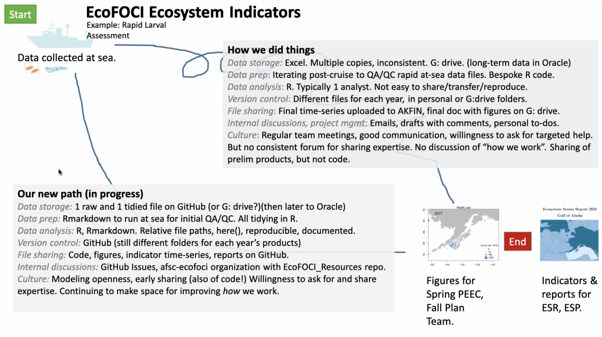

Winter 2021-2022 AFSC
AFSC Openscapes Winter 2021-2022 planning team: Josh London, Em Markowitz, Megsie Siple
AFSC supported 8 teams from across the center in the 2022 Winter Openscapes Cohort of the Openscapes Champions training program. This cohort training took place over 5 remote calls from January 28 to March 11, 2022. Cohort calls covered: 1) setting the open science mindset and discussing psychological safety, 2) an introduction to publishing and project management on GitHub, 3) instituting team culture and data strategies, 4) developing open communities and coding strategies, and 5) preparing a team pathway document to guide their open data science journey after the training.
The teams focussed their energy on a range of important research issues supporting the AFSC mission including shellfish, fisheries, marine mammals, stock assessments, ecosystem indicators, trophic relationships, and food habits. The teams consisted of 41 AFSC employees from 5 AFSC divisions and the Alaska Regional Office. All of the teams developed their skills for analysis workflows, report writing and manuscript preparation, promoting a culture of inclusivity and collaboration, intentional investment in on- and off-boarding processes, better collaboration with academic and state governments, and integrated project management. All of this was achieved within the context of a growing expansion of open science within NOAA and the greater scientific community.
For each of the teams, the Openscapes training was just the beginning of a longer process. It is essential that AFSC leadership, division directors, and supervisors continue to offer the support, time, space, and enthusiasm as teams continue to develop skills and implement meaningful new practices. Participants in the training also recognize the need for additional training in specific skills and technologies (e.g., R, Python, Git and GitHub, advanced Google Workspace, reproducible analysis, collaborative writing). The AFSC can provide support for these needs by both identifying and funding training opportunities, and by encouraging scientists to allocate work time for expanding knowledge and expertise through free resources and self-directed training.
Participants from the AFSC Openscapes cohort found the training transformative for their professional development. The training created a supportive forum for continued learning and collaboration across programs and divisions. As mentors for the AFSC Openscapes cohort we are committed to the community of support and active learning environment established during the training. We feel confident in stating AFSC’s continued investment in Openscapes will establish AFSC scientists as leaders in open science, enhance collaborations across divisions and centers, ensure continuity of long-term research efforts, and improve scientific communication to all stakeholders. Everyone involved in the cohort looks forward to expanded Openscapes training opportunities in the near future.
Teams and their achievements
The EcoFOCI Ecosystem Indicators Team Aimed to streamline, document, and standardize survey data analysis and annual reporting of EcoFOCI ecosystem indicators for ESRs and ESPs. Before openscapes, the team felt that tight timelines forced the team to work “quickly; not always carefully” and that the Openscapes training gave them space to explore easier, faster, and more consistent ways to prepare results. They created a GitHub organization to help them codify data and code, and more importantly, invest in culture change. The team heavily discussed establishing a culture of modeling openness, sharing early code, and asking for expertise. The team aptly phrased the latter as “hidden expertise,” as the expertise may exist, but on local computers and unbeknownst to their peers, forcing others to reinvent workflows and processes that were already established.

The Marine Mammal Stock Assessments Team aimed to streamline the development, review, and publication of the annual Alaska marine mammal stock assessment reports. They used GitHub, a new GitHub organization, wikis, and R Markdown to establish processes for preparing data and analyses, tackle outdated version control workflows, and improve on and offboarding procedures. The team focused on developing one SAR in R Markdown as a proof of concept. The team found that seaside chats spurred open discussion and idea sharing and has continued to meet regularly after Openscapes.
The Groundfish Food Habits Team was focused on streamlining reproducible flow of code and data to provide food habits and model data to ESRs, ESPs, and stock assessments. The team found that writing out the pathways document helped confirm next overarching steps for the group, that there were changes that needed to happen in their workflow, and that they needed to establish best practices. In an effort to foster a culture of reuse, the team started and tested out a GitHub organization and other avenues for collaboration so they can find the best platform forward for their unique team’s needs.
The Shellfish Assessment Program Team was focused on 1) improving their annual Tech Memo and 2) improving collaboration on bitter crab disease reports. Through the Openscapes program, the team devised a plan for accessing raw data, to data wrangling, to preparing tech memo figures. With their new GitHub organization, they had the tools to start earnest discussions on how to document their work.
The AFSC Stock Assessment Team’s overarching goals were to 1) create reproducible stock assessments and streamline reporting and presenting to Council bodies (specific project could be to take two assessments as examples: arrowtooth flounder and northern rockfish), 2) improve data to modeling to reporting for economic models, 3) create consistent fishery data sources across science and management, and 4) discuss of CFI implementation. They developed the Stock Modeling and Assessment Reproducibility Team (SMART), a supporting SOP, and a GitHub organization. SMART combines the two stock assessment teams and coordinates regular meetings and overarching goals for the effort.
The Trophic Roles of Ice Seals RWP Team aimed to develop a new Regional Work Plan-funded project to estimate the consumption of dominant prey by ice-associated seals in the Bering and Chukchi seas that would involve collaborators within and beyond NOAA. The team felt that Openscapes created a space for members to collect thoughts, define a more efficient and thoughtful workflow ecosystem (e.g., tidyverse) to work within, and start planning how they can share what they learned and hope to implement with their larger group. The team worked on how their new GitHub Organization could help them work with external collaborators and instill version control as projects evolve. The team felt that working though this example project provided them with a universal framework that can be transferred to other existing projects.
The Fisheries Monitoring Team was focused on improving the Annual Deployment Plan analytic and report production workflow and result sharing with council, stock assessors and the public. Galvanized by Openscapes’ GitHub tutorial and an endeavor to streamline the onboarding and offboarding process, the team has begun moving much of their dataset wrangling scripts and issue tracking to GitHub. The team has also begun developing standard datasets for everyone to use in easy to access locations.
The Midwater Pollock Assessment Team aimed to create a reproducible and transparent abundance analysis and reporting process for the management of midwater walleye pollock data in Alaska. This team used their time with Openscapes to explore the best project management platform for their team and survey preparation, realizing that trello and smartsheets gave the team the flexibility they needed. The team also began automating cruise reports with R Markdown. The team next plans on providing a demonstration and presentation to the rest of their larger group as they start planning for their summer survey.
Continued support
At the conclusion of the training, cohort members were encouraged to share their hopes for how the AFSC will continue to support and enhance open data science within our community. Their responses are summarized below.
- Support from supervisors and leadership for building this and similar approaches into other projects. Cohort members were interested to hear from AFSC leadership about how the Board of Directors, program leads, and supervisors plan to support staff in learning these new skills and applying them in the future.
- Establishing best practices across science centers for sharing large, confidential datasets with collaborators without having collaborators interact directly with internal databases. These challenges are not unique to AFSC and would benefit from cross-center collaboration.
- Allocating time for implementing open data science practices into performance plans by making the development of open science strategies and skills central to an employees’ priority activities and not an additional task relegated to ‘spare time’.
- Including contractors in trainings (like Openscapes) in the future, so that research teams can participate in full.
- Continued development of user-driven connections, communication, and collaborative learning between centers and between divisions at AFSC, including a focus on psychological safety.
- Additional and specific technical training in RMarkdown, GitHub, RStudio Connect, public data sharing and team-building skills.